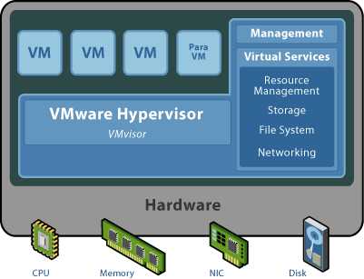
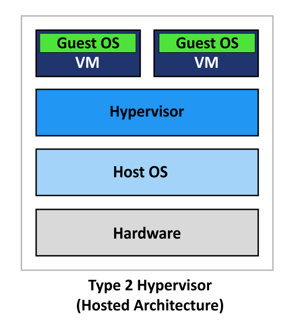
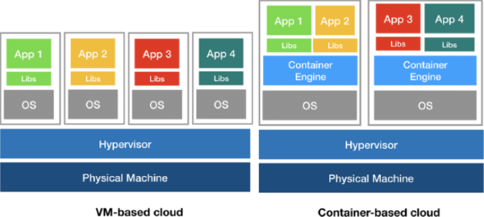
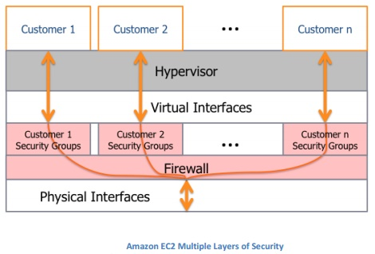
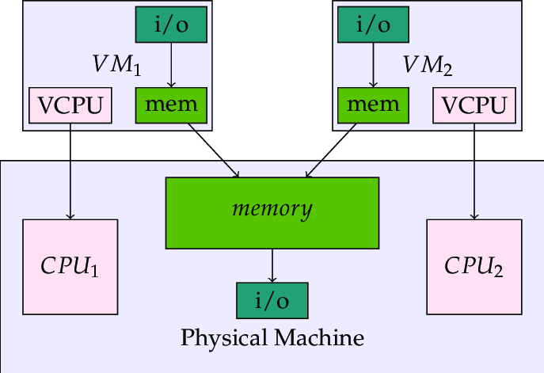

Hypervisors
What is a hypervisor? Hypervisors are virtual machines monitors that allow a number of virtual operating systems to simultaneously run on a computer system. These VM’s are also called guest machines and they all share the physical hardware of a machine such as the processor, memory, storage and all the other system resources. This maximizes the use of these resources. The hypervisor separates the host machine and the operating system. The job of a hypervisor is to cater to the needs of a guest operating system and manages it efficiently. Every VM is independent and do not interfere with each other. Even when one faces crashes, the others will continue to perform as normal.
figure 1.A hypervisor architecture.
Hosted hypervisor
A hosted hypervisor is a hypervisor that runs on the software layer within an operating system. This hypervisor runs as a separate second layer over the hardware while the operating system run as a third layer. Some examples include Parallels Desktop and VMware Player. The actual usage of hypervisors is that they add a layer of management as well as controlling over the data counts up as the main functions of hypervisors. Hypervisors in cloud computing are not just used as control over data centers. They are also now used as storage hypervisors. These storage hypervisors are used to centralize the storage pool by using virtual resources. This reduces the concern regarding the physical location of the storage.
figure 2.A hosted hypervisor architecture with parallel VM.
History of hypervisors
The history of hypervisors goes thusly: in the late 1960s and into the 1970s most virtualization and hypervisor work was seen on mainframe computers developed by IBM. This was mainly used in testing new operating system ideas and exploring new hardware concepts. This virtualization aspect would allow programmers to debug and work on these said ideas without jeopardizing the main production system and without having to deploy additional costly development systems. Now jumping ahead into the 2000s hypervisors were mainly used when Linux, Unix and other Unix-like operating systems began to utilize virtualization technologies. The growth of hypervisors and virtualization is because of better Hardware capabilities. Which better allow a single machine to do a lot more simultaneous work. Cost control efforts that have led to consolidation of servers improved security and reliability due to hypervisor architecture Improvement and the ability to run OS dependent applications on different hardware or operating system environments. To top it all off in 2005 going on CPU vendors started adding hardware virtualization to their x86 based products. This increased the benefits and the availability of virtualization to all audiences.
Benefits of Hypervisor
The benefits of hypervisors go thusly: As mentioned previously virtual machines can run on the same physical Hardware, but they are still separate from one another this means when a single virtual machine experiences any errors or crashes or various malware or viruses text. It will not affect any other virtual machines on the same machine. Virtual machines are independent of the underlying Hardware because of this they are very mobile. They can be moved between local or remote virtualized servers much easier than traditional applications that are tied to the hardware.
Containers
Generally speaking when we talk about hypervisors, we have to talk about containers. In recent years containers have become more and more popular as a possible replacement for hypervisors. This is because they can place more applications into a single physical server than a virtual machine can. “VMs take up a lot of system resources. Each VM runs not just a full copy of an operating system, but a virtual copy of all the hardware that the operating system needs to run. This quickly adds up to a lot of RAM and CPU cycles. In contrast, all that a container requires is enough of an operating system, supporting programs and libraries, and system resources to run a specific program,” says Steven J. Vaughan-Nichols in a 2016 article. Security concerns and practical uses of virtual machines however mean that containers won't replace hypervisors or VMS. Instead companies will use a combination of both.
figure 3.Demonstration how containers place more application to a single server.
Security in Hypervisors
While hypervisors are considered more secure than containers in some measures. It doesn't mean that they aren't security concerns with side with hypervisors. For example Hackers can create malware and rootkits that install themselves as a hypervisor below the operating system. This process is called hyperjacking and it is more difficult to detect as the malware can intercept and snoop on the operations of the operating system for example when you're entering a password. And all this can be done without the anti-malware software necessarily detecting it because the malware runs below the operating system.
figure 4.Amazons "("AWS")" security architecture.
Hypervisor Expansion
We shall now touch on the concept of hypervisor expansion. Hypervisors haven’t just been limited to server operations. There are storage hypervisors which take the same concepts and apply it to data storage. A storage hypervisor runs on physical hardware as a virtual machine inside a hypervisor operating system or within a larger storage network just like hypervisors the storage hypervisor can run on specific hardware or be independent of the hardware. In addition hypervisors are key for other virtualization efforts these include desktop virtualization operating virtualization and application virtualization.
Embedded hypervisors
Lastly we shall talk about embedded hypervisors which support the requirements of embedded systems. The embedded hypervisors are designed into the embedded device from the outset and this differs from the regular hypervisors that target the server and desktop applications. While enterprise environments use hypervisors to consolidate hardware and isolate computing environments from one another, in an embedded system, the various components typically function collectively to provide the devices functionality.
 figure 5.Embedded hypervisor architecture.